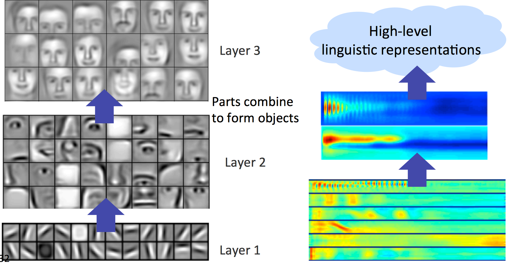
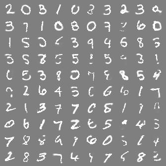

Introduction to Deep Learning
Geospatial tech seminar
Haoran CaiGeospatial team
The Climate Corporation
Beyond face detection...
We will run a general object detection demo right on our GPU server using state-of-the-art deep learning detection algorithm RCNN.

Girshick, Ross, et al. "Rich feature hierarchies for accurate object detection and semantic segmentation." Computer Vision and Pattern Recognition (CVPR), 2014 IEEE Conference on. IEEE, 2014.
Beyond image classification...
We will fine tune the award winning deep learning model(Alexnet) for a much harder task: style recognition.

Krizhevsky, Alex, Ilya Sutskever, and Geoffrey E. Hinton. "Imagenet classification with deep convolutional neural networks." Advances in neural information processing systems. 2012.
What is Neural Network
Structure of Neural Network

LeCun, Yann, Yoshua Bengio, and Geoffrey Hinton. "Deep learning." Nature 521.7553 (2015): 436-444.
Why we need neural network structure?
Why we want to go deep?
Multiple levels of representation
Lee, Honglak. Unsupervised feature learning via sparse hierarchical representations. Stanford University, 2010.
The unreasonable effectiveness of deep features: transfer learning
Our Ultimate goal: end-to-end learning
What is Google's Deep Dream?
Illustration of Deep Dream
- Simply feed the network an arbitrary image or photo and let the network analyze the picture. We then pick a layer and ask the network to enhance whatever it detected.
-
Essentially it is just a gradient ascent process that tries to maximize the L2 norm of activations of a particular deep neural network layer
-
Let's make our own dream!
How to train deep architectures?
Layerwise Unsupervised Pre-Training
Dropout
Srivastava, Nitish, et al. "Dropout: A simple way to prevent neural networks from overfitting." The Journal of Machine Learning Research 15.1 (2014): 1929-1958.
Big data era, Power of GPU
What is the most popular deep architectures?
Convolutional Neural Network (CNN)
1D sequence
Picture source: Christopher Olah's Blog
Fully connected layer
Picture source: Christopher Olah's Blog
Convolutional layer
Picture source: Christopher Olah's Blog
Convolutional layer
Picture source: Christopher Olah's Blog
Stacked convolutional layer
Picture source: Christopher Olah's Blog
Max-polling layer
Picture source: Christopher Olah's Blog
2D convolutional layer
Picture source: Christopher Olah's Blog
Stacked 2D convolutional layer
Picture source: Christopher Olah's Blog
Put them together...
Picture source: Christopher Olah's Blog
Here comes the 3D structure...
Krizhevsky, Alex, Ilya Sutskever, and Geoffrey E. Hinton. "Imagenet classification with deep convolutional neural networks." Advances in neural information processing systems. 2012.
What I havn't covered here?
deep boltzmann machines
Original
Masked
Inpainted

Image understanding

LeCun, Yann, Yoshua Bengio, and Geoffrey Hinton. "Deep learning." Nature 521.7553 (2015): 436-444.